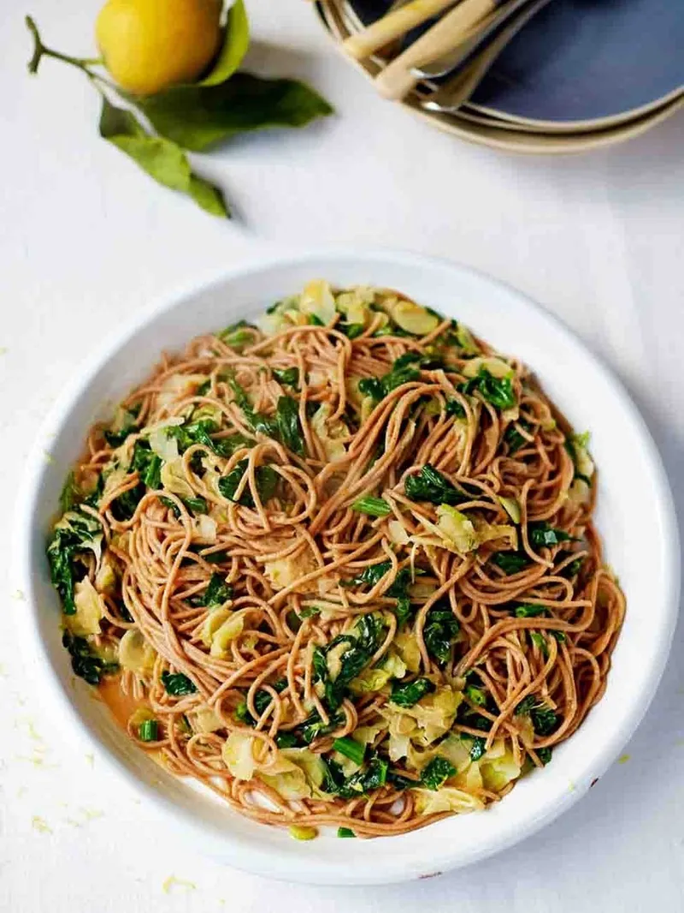

Sardine spaghetti

“Pasta con le sarde is a trademark dish of Sicily, due to the abundance of beautiful fresh seafood they have in southern Italy. However, my version uses tinned sardines, which are a great alternative if you can’t get fresh. Plus, using tinned fish also turns this dish into a speedy weeknight winner, which you can get on the table in under half an hour.”
Ingredients
- 2 large ripe tomatoes , (200g)
- 1 x 120 g tin of sardine fillets in olive oil
- 200 g baby spinach
- 300 g dried wholewheat spaghetti
- 1 bulb of fennel
- 2 lemons
- 20 g ricotta salata
- 1 pinch of dried chilli flakes
Instructions
- Halve 2 large ripe tomatoes (200g total), scoop out and discard the seeds, then place in a blender. Add 1 x 120g tin of sardine fillets (and their oil), then blitz until super-smooth, adding a splash of water to loosen, if needed.
- Roughly slice 200g of baby spinach, then place in a large colander in the sink.
- Cook 300g of wholewheat spaghetti in a large pan of boiling salted water according to the packet instructions.
- Pick and reserve any leafy tops from 1 bulb of fennel, then very finely slice the stalks and bulb, ideally on a mandolin (use the guard!). Add the fennel to the spaghetti pan for the last few minutes of cooking.
- Reserving a mugful of cooking water, drain the spaghetti and fennel over the spinach in the colander, so that the spinach starts to wilt. Return the pasta, fennel and spinach to the pan, and toss with the sardine sauce.
- Squeeze in the juice from 1 lemon, loosening with a splash of cooking water, if needed.
- Season to perfection with sea salt and black pepper, finely grate over 20g of ricotta salata (see ingredient note below) and a little lemon zest, then sprinkle over any reserved fennel tops and 1 pinch of dried chilli flakes.
- Cut the remaining lemon into wedges for squeezing over, then serve immediately.
Nutrition
of an adult's reference intake